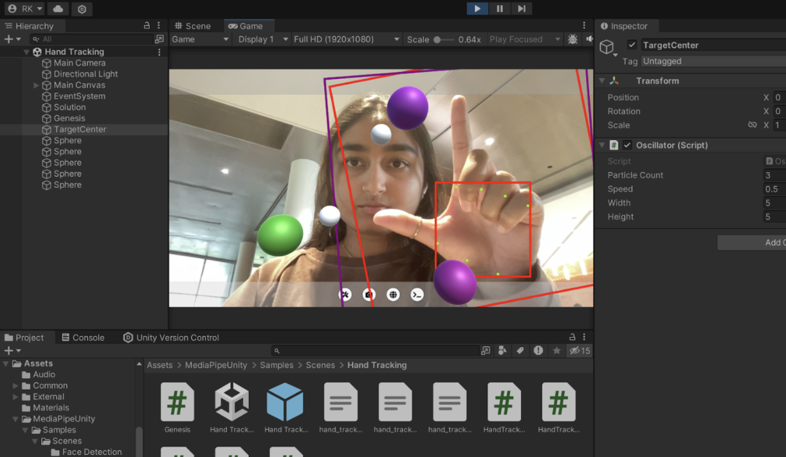

Gesterial Control
Created Fall 2024 · Unity · C# · MediaPipe
Source code on GitHub
· Technical guide (PDF)
Key Words: Gesture-controlled interaction tool · MediaPipe hand tracking · Real-time particle system · Technical guide · Linear interpolation · Trigonometric calculations · Collision detection
